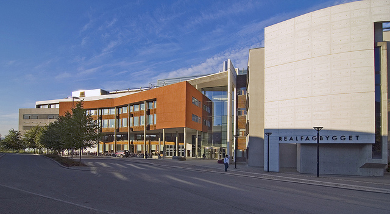

Om Realfagsbygget

Realfagbygget er en av NTNUs bygninger på Gløshaugen i Trondheim. Det rommer undervisningslokaler, laboratorier, kontorer, Realfagbiblioteket og kantine for studenter og ansatte ved instituttene for biologi, for fysikk og for kjemi.
I 1994 ble det gjennomført en åpen arkitektkonkurranse om et realfagbygg på Gløshaugen. Arkitektkontoret Narud-Stokke-Wiig vant konkurransen i samarbeid med HUS Arkitekter AS, og de fikk oppdraget med å prosjektere det nye bygget. I 1996 vedtok Stortinget å etablere NTNU. Samme år ble det bevilget midler over statsbudsjettet til å starte byggingen, for å kunne samle de realfaglige fakultetene, som var spredt på flere områder i byen. Grunnarbeidene startet samme år og 28. mai 1997 ble grunnstenen lagt ned av daværende statsråd Gudmund Hernes.
Trykk her for å lese om Høgskoleringen 3 (P15)